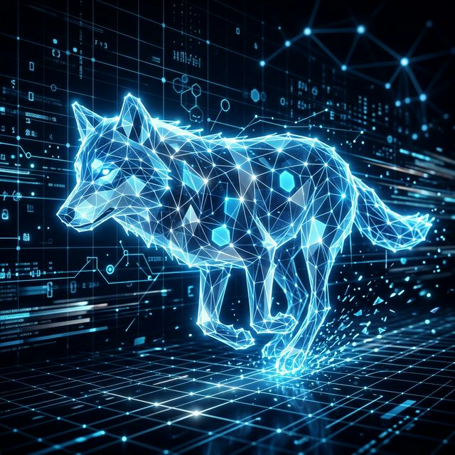

A mathematical and behavioural simulation of the Grey Wolf Optimisation algorithm, modelling leadership hierarchy and cooperative hunting to solve complex optimisation problems.
Grey Wolf Optimisation (GWO) is a metaheuristic algorithm inspired by the social hierarchy and cooperative hunting strategies of grey wolves. The algorithm models leadership roles - alpha, beta, delta, and omega - and uses them to guide the search for optimal solutions.
The algorithm simulates three core behaviours:
The project implements the full GWO algorithm, including:
The algorithm demonstrates stable convergence on multiple optimisation landscapes, including multimodal and unimodal functions. Its balance between exploration and exploitation allows it to escape local minima effectively.

GWO showcases how simple behavioural rules can produce powerful optimisation capabilities.
Discuss optimisation algorithms